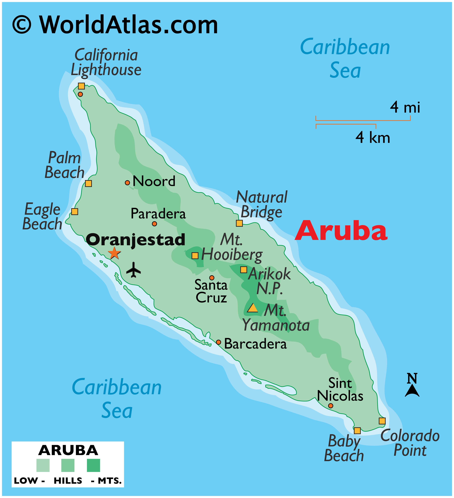
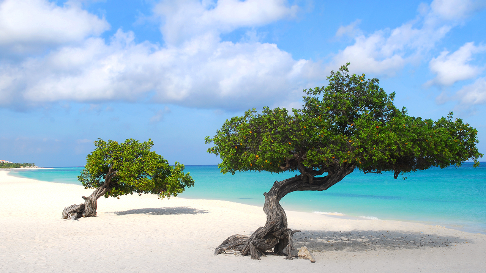
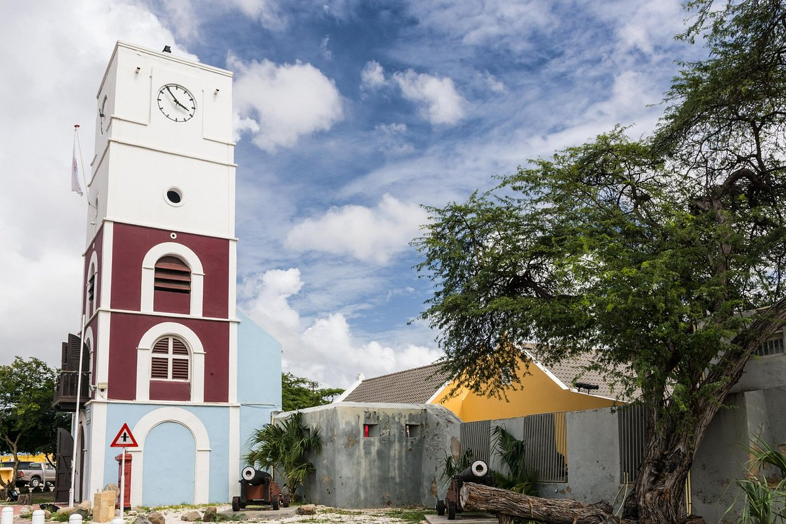

By far the most famous island in the trio, Aruba is known for its marvelous white sand beaches and vibrant art culture. Here are our favorite attractions in Aruba.

Eagle Beach is by far the most popular and widest beach on the island of Aruba. With its white sands and turquoise waters, you will feel like you are in paradise. The many beach huts and bungalows along the coast will give you a sense of mindfulness as you take in the beauty of Aruba's waters, home to many of the island's sailboats. In addition to the beach huts and white sands, Eagle Beach is home to two stunning Fofoti trees. Despite the humid temperatures, these trees have managed to survive in the middle of the beach and they are some of the most photographed trees in Aruba, appearing on promotional materials for the island.
The oldest remaining building on the island of Aruba, Fort Zoutman was built by the Dutch in 1796 to protect the island from pirates and invaders. The neighboring Willem III Tower was built in 1868 to serve as a lighthouse and a clock tower. Today the building serves as a refuge for Aruba's past and present. The museum contains artifacts from the indigenous people of Aruba and documents from Aruba's colonial days under Dutch rule. Additionally, the museum contains a replica kitchen to show how Arubans cooked their food in colonial times.
